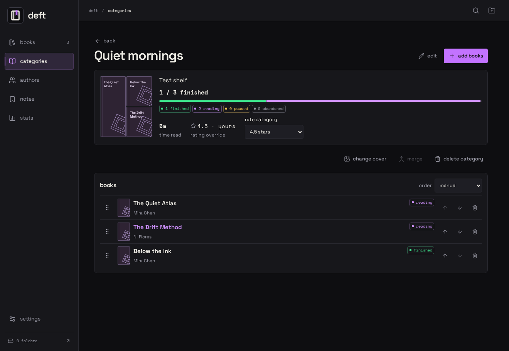
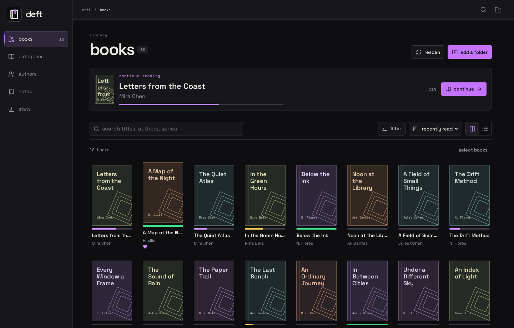
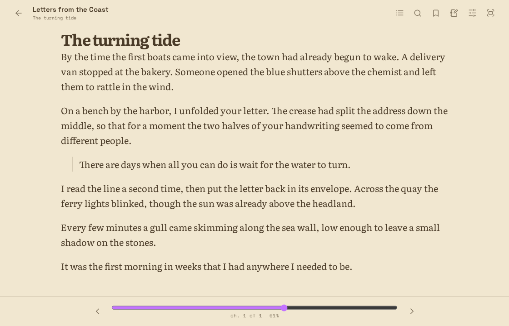
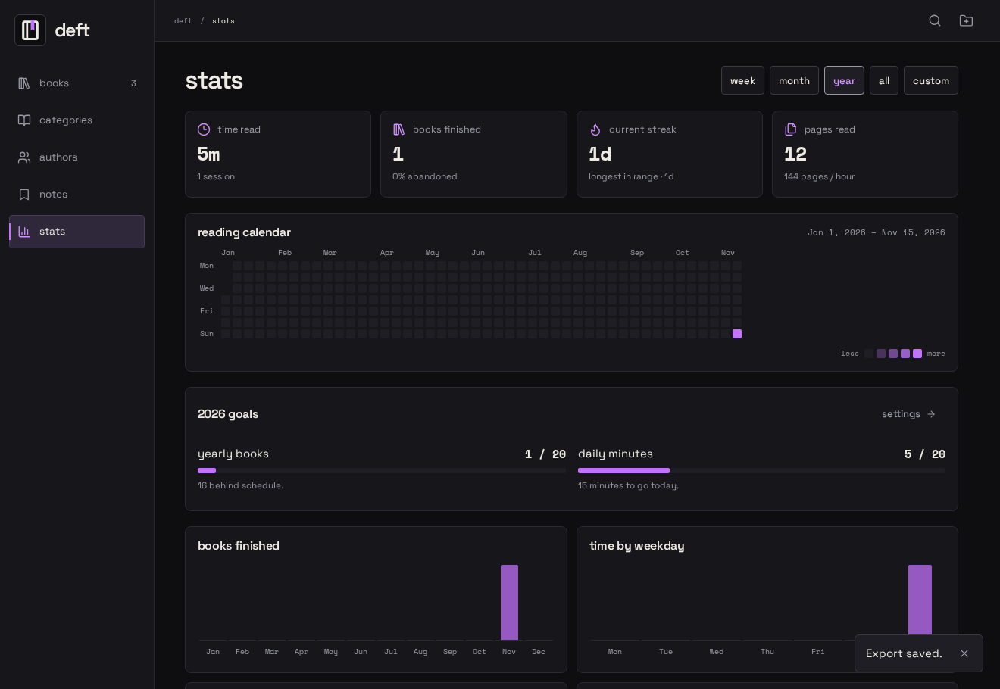

Library
Your folders become your library.
Point Deft at an ebook folder. Sort by author, build categories, or keep a series in order. If a file moves, Deft can reattach it to your reading history.

Ebook reader for Windows
Read the books you already have. Deft keeps your place, saves your notes, and tracks your reading time. It all lives on your computer.

The reading room
Library
Point Deft at an ebook folder. Sort by author, build categories, or keep a series in order. If a file moves, Deft can reattach it to your reading history.

Reader
Adjust the type, spacing and theme. Bookmark a page, highlight a passage, or add a note and jump back to it later.

Reading history
Deft records active reading time as you go. Look back on sessions, set goals, and see which books shaped your year.

Offline by design
Deft reads your ebook files in place. Your notes, ratings and history stay on the device, and you can export them or save a local backup. Edition lookup only runs when you ask.
Windows 10 / 11 · x64
Choose a Windows package from GitHub Releases. Setup and MSI include the offline WebView2 installer. The portable ZIP uses a WebView2 runtime already on the device.
View Windows releases.exe Setup.msi Windows Installer.zip Portable